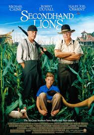
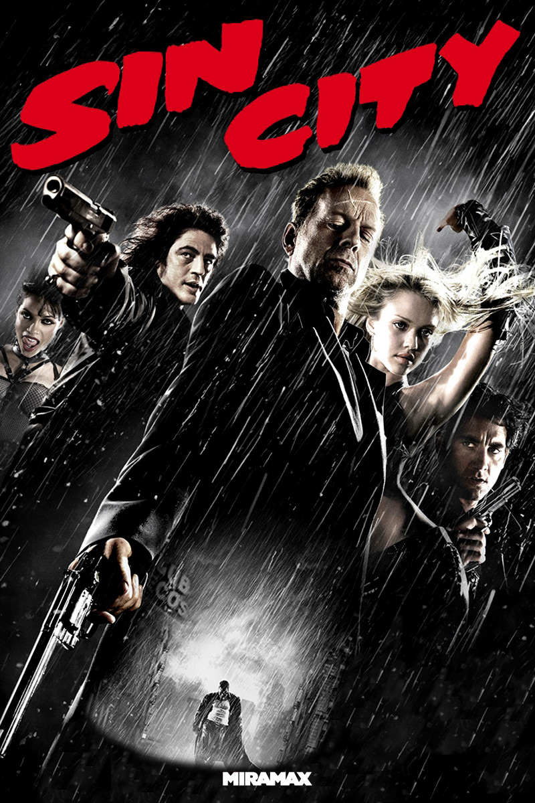
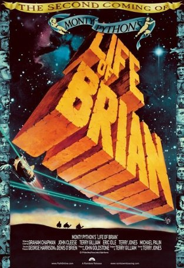

After being a consultant for 12 months I want to tackle coding as a new challenge
Check me out on GitHub|  |
Second Hand LionsSecondhand Lions is a 2003 American comedy-drama film written and directed by Tim McCanlies. It tells the story of an introverted young boy (Haley Joel Osment) who is sent to live with his eccentric great-uncles (Robert Duvall and Michael Caine) on a farm in Texas. |
|  |
Sin CitySin City (also known as Frank Miller's Sin City) is a 2005 American neo-noir crime anthology film written, produced, and directed by Robert Rodriguez and Frank Miller. It is based on Miller's graphic novel of the same name.[4] |
|  |
Life of BrianMonty Python's Life of Brian, also known as Life of Brian, is a 1979 British religious satire comedy film starring and written by the comedy group Monty Python (Graham Chapman, John Cleese, Terry Gilliam, Eric Idle, Terry Jones and Michael Palin). It was also directed by Jones. The film tells the story of Brian Cohen (played by Chapman), a young Jewish man who is born on the same day as, and next door to, Jesus Christ, and is subsequently mistaken for the Messiah. |